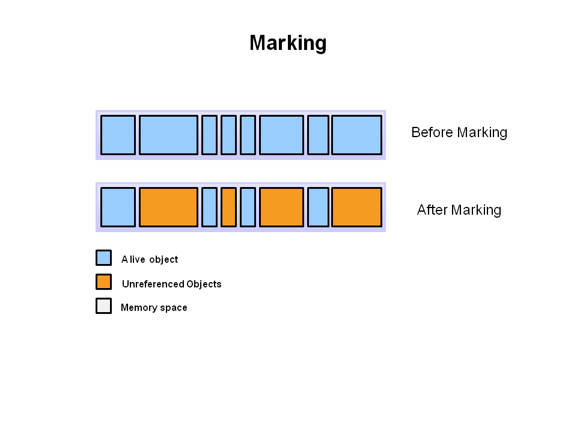
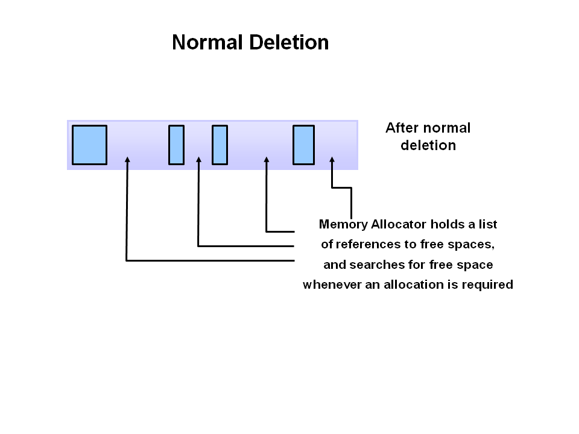
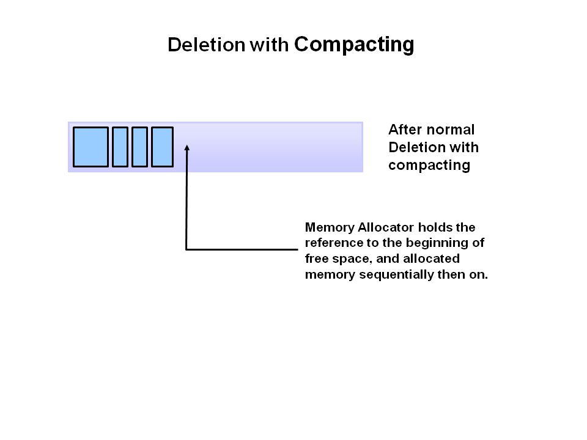
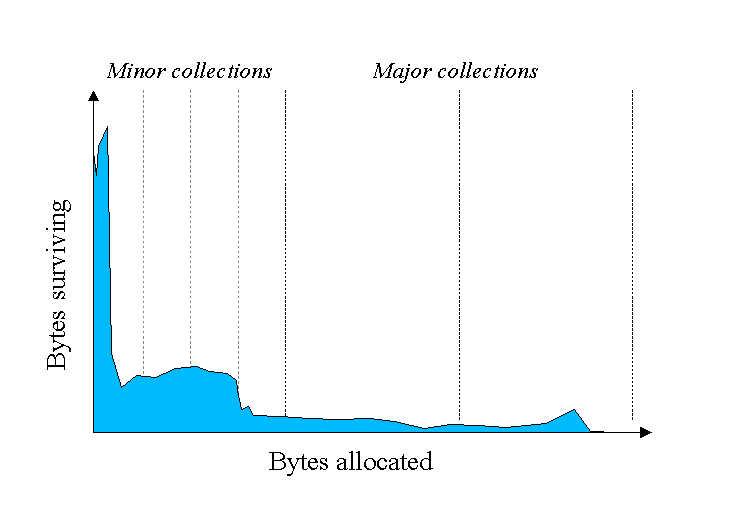
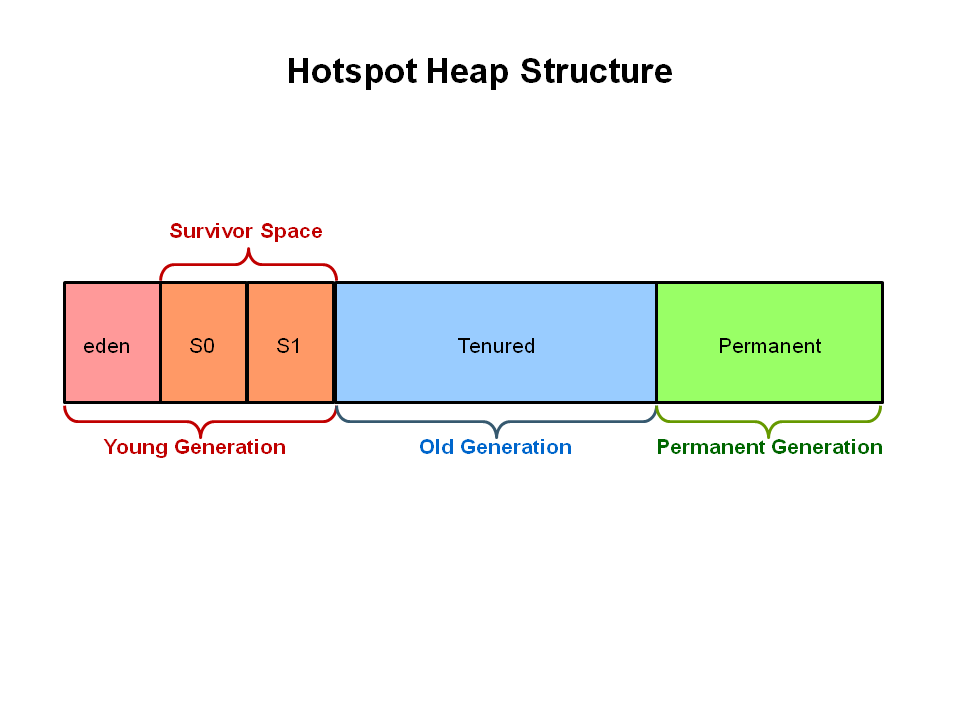
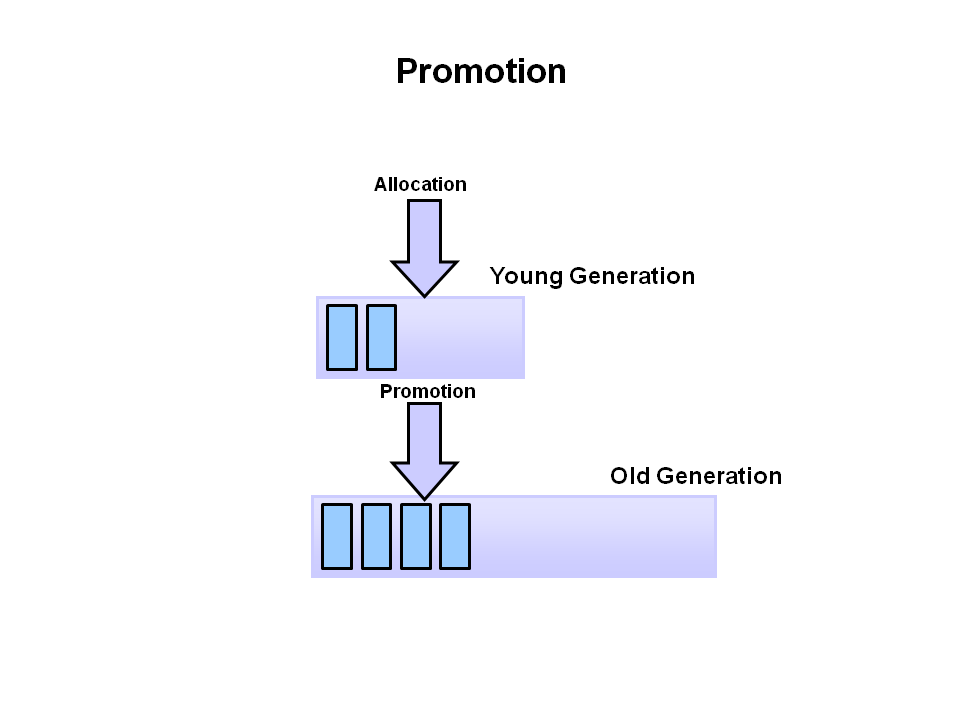

HotSpot JVM具有成熟的体系架构，使得它具有很强的可扩展性，并且在实际应用中具有很高的性能表现。其具有的JIT编译器能够在编译时对代码进行动态的优化。

HotSpot JVM主要包括类加载器，运行时数据区和执行引擎。
在JVM组成中，影响JVM性能的三个关键模块堆（Heap）, JIT编译器（JIT Compiler）, 垃圾收集器（Garbage Collector）,堆是虚拟机运行时，所有对象所在的区域，该区域被启动时设定的垃圾回收器管理。绝大多数的调优操作都与堆的大小设置，最佳垃圾回收器的选取有关。JIT编译器也是影响JVM性能的一个非常大因素，但是它只与JVM的版本有关系。
性能调优
性能调优的衡量指标一般是以下两个中的一个，响应或者是吞吐量。
1）响应（Responsiveness）
响应指的是当我们发送一个请求时，能够多快的获取数据响应，比如：
（1）触发一个时间，桌面UI多久能够响应；
（2）请求一个网页多久能够返回；
（3）请求一个数据查询多久能够返回；
对于关注于响应的应用来说，过长的暂停时间是不能接受的，应该尽可能短的降低等待时间；
2）吞吐量（Throughput）
吞吐量是指在一段时间内，应用处理请求的最大值。以下实例主要通过吞吐量来衡量：
（1）在指定时间段内，请求处理完成的数量；
（2）一个批处理任务在一个小时内完成；
（3）一个批查询任务在一个小时内完成；
在这些应用下，高频次的等待是可以接受的，因为高的吞吐量其衡量基准在于一个较长时间，而响应时间不被考虑在内；
关于垃圾回收
1）什么是自动的垃圾回收
自动的垃圾回收是处理堆内存的过程，该过程鉴别堆中哪些对象还在使用，哪些已经不再使用了，删除不再使用的对象。一个正在使用对象或者一个引用对象，指的是在程序的某个部分包含了指向该对象的指针。而相反，不再使用的对象，在程序的任何地方都不被引用，这些不再被使用的对象所占用的内存会被收回。
2）基本的垃圾回收过程主要有以下几步：
（1）第一步：标记（Marking）
垃圾回收的第一步是标记（Marking），在这一步，垃圾回收器标记哪些内存的片段正在使用，哪些已经不再使用。

蓝色的部分是被引用的对象，黄色的部分是不再被引用的对象，在该阶段多有的对象都会被扫描，该扫描是垃圾回收过程中主要的时间消耗；
（2）第二步：删除（Normal deletion）
该阶段，移除不再被引用的对象，只剩下被引用的对象，内存分配器的指针指向空闲区域。

当新的对象被创建时，内存分配器将引用放置于内存的空闲区域；
（2-a）删除并整理（Deletion with Compacting）

为了进一步提高性能，在进行删除不再使用的对象时可以将剩下的正在使用的对象进行整理。将仍处于饮引用状态的对象合并到一起并移动到内存区的一边，这样空闲的内存区域能够很方便的被定位和分配给新产生的对象。
（3）为什么要进行分代垃圾回收
在程序运行的开始阶段，标记和整理所有的对象是非常高效的，但随着堆内的对象越来越多，更多的对象会进入垃圾收集器的处理范围，使得扫描，删除，整理的时间变得越来越长。而且通过分析可以得出，绝大多数的对象的生命周期都是非常短暂的。

通过上图可以看出，随着时间的增长，存活的对象越来越少，绝大多数的对象只存在了很短的时间。
（4）JVM的代（Generations）
根据对象的分配规律可以提高JVM的性能，因此， 堆被划分成了较小的区域，这些区域可以称为代。堆的组成包括年轻代，年老代以及持久代。

年轻代（Young Generarion）
新创建的待遇所分配的区域，当年轻代被填满时，会触发Minor GC。Minor GC可以通过调整类死亡率进行优化。年轻代填满或者垃圾对象被收集都是非常的快，剩余的对象变为老年代（Old generation）,并最终移到老年代区域。
JVM暂停（Stop the World Event）
所有的minor GC都会导致程序出现暂停，即发生Stop the World Event，这意味着所有的应用线程都被停下来，知道垃圾回收工作完成。Minor GC总是会触发Stop the World Event。
老年（Old generation）
老年代用来存储存活时间比较久的对象。年轻代的存活对象每经过一次Minor GC，其代数变加一，可以设置有一个阈值，年轻代中的存活对象的代数超过了该阈值（HotSpot的默认值是15），便被移动到老年代中。当老年代区域满了时，最终也要进行垃圾回收，称为Major GC，也称为Full GC。
Full GC也会触发Stop the World Event，通常Fall GC 消耗的时间要大于Minor GC，因为它存活的对象比较多。所以，对于追求响应时间的应用，Full GC的时间应当最小化。
Full GC所花费的时间也与老年代 垃圾回收器的选择有很大的关系。
持久代（Permanent Generation）
持久代用来存放应用所使用的类型信息和方法信息。如果类型信息不再使用，那么其占用的内存会被回收（类被卸载）。持久代的垃圾回收发生在Full GC中。
垃圾回收的过程
1）首先，所有创建的新对象都被分配在Eden区，两个Survivor区都是空的。

2）当Eden区填满后，会触发Minor GC;

3）正在被使用的对象被移动到第一个Survivor区域（From Survivor）,不再被使用的对象被回收，Eden区被清空；

4）在下一次的Minor GC，会重组3）的动作，但是这次，Eden和From Survior中存活的对象移动到第二个Survior（To Survior 区）中。另外，上一次Minor GC存活下来的在From Survior中的对象在移动过程中，代数会加1。最后第一个Survivor（From Survivor）被清空，进行下次Minor时使用；

5）下一次Minor GC，会重复4）的动作，但是这是From Survivor和To Survivor会进行调换，剩余对象移动到From Survivor中，To Survivor区被清空。

6）随着Minor GC的不断进行，当Survivor区域内的对象的代数达到阈值（当前设置为8）时，这些对象被移动到了老念代。

7）随着Minor GC的不断进行，越来越多的存活对象被移动到了老年代。

8）当老年代也被填满时，就会发生Major GC，老年代中不再被使用的对象会被回收，内存区域重新进行整理。

总结
本文着重介绍了HotSpot虚拟机进行分代垃圾回收的步骤。